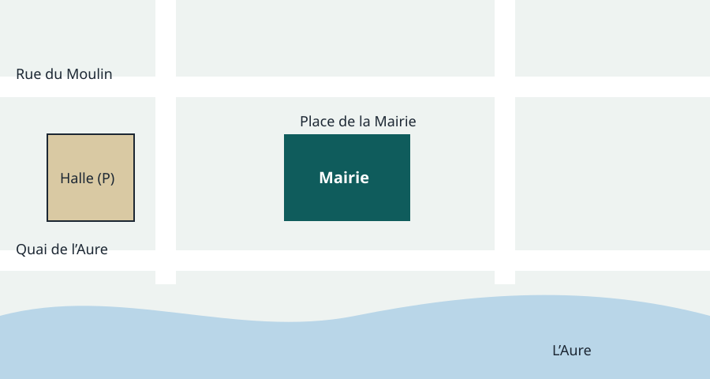

Infos pratiques
Venir à la mairie
| Accueil général | Service état civil | |||
|---|---|---|---|---|
| Matin | Après-midi | Matin | Après-midi | |
| Lundi | Fermé | 14 h – 17 h | Fermé | Fermé |
| Mardi au vendredi | 9 h – 12 h | 14 h – 17 h | 9 h – 12 h | Sur rendez-vous |
| Samedi | 9 h – 12 h | Fermé | 9 h – 11 h | Fermé |
1, place de la Mairie, Valmont-sur-Aure
Téléphone : 02 61 91 00 00
Courriel : mairie@valmont-sur-aure.example
Le parking de la place de la Halle (40 places, gratuit) se trouve à deux minutes à pied. Deux places réservées aux personnes titulaires d’une carte mobilité inclusion sont situées devant l’entrée, quai de l’Aure.
Arrêt de bus « Mairie », ligne 2. Arceaux à vélos sous le porche.
Plan d’accès
La mairie se trouve place de la Mairie, entre la rue du Moulin au nord et le quai de l’Aure au sud. L’entrée de plain-pied donne sur le quai. Le plan ci-dessous défile horizontalement et verticalement, à la souris, au doigt ou au clavier.

Questions fréquentes
Faut-il prendre rendez-vous pour une carte d’identité ?
Oui. Les rendez-vous se prennent par téléphone auprès de l’accueil, aux horaires d’ouverture.
Combien de temps faut-il pour recevoir un acte d’état civil ?
L’acte est envoyé par courriel sous cinq jours ouvrés après une demande complète.
La mairie est-elle accessible en fauteuil roulant ?
Oui, par l’entrée du quai de l’Aure, de plain-pied. Un ascenseur dessert la salle des mariages au premier étage.
Le carillon de la mairie
Extrait sonore de cinq secondes. Il ne contient aucune parole : on entend une seule note tenue, dont le volume ondule deux fois par seconde.